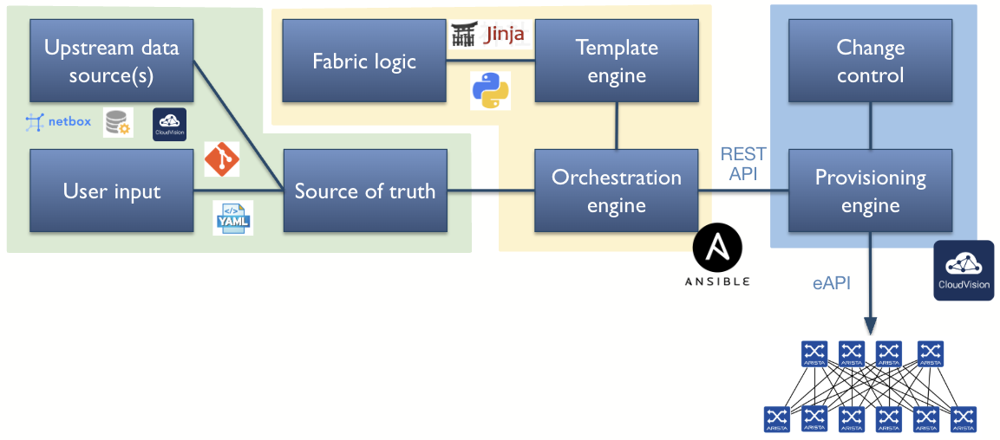
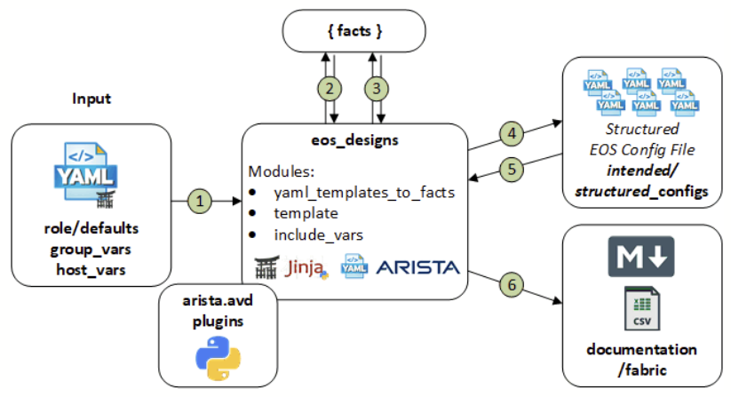
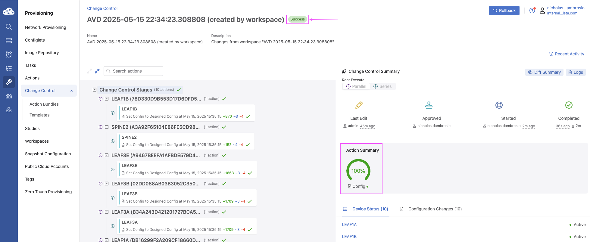

Arista Southwest Region Newsletter¶
Welcome to the May 2025 newsletter for Arista customers in the U.S. Southwest Region!
We welcome your feedback on the newsletter. If you have any ideas on what you want to see, please reach out to southwest@arista.com.
Arista AVD Workflow¶
By: Nicholas D'ambrosio, Advanced Services Engineer, Southwest Region
In this month's newsletter, we are introducing a new type of article. One in which you can follow along in your environment! Nicholas has written a tutorial on using an AVD Workflow to deploy network configurations. Follow the tutorial to gain practical knowledge on our AVD tools!
Not familar with AVD just yet? Below is a link to introduce the foundations and key areas to implment AVD. AVD Introduction Click Here
Table of Contents¶
- Arista AVD Workflow
- Table of Contents
- AVD Workflow Overview
- Inventory Structure
- Deploy Playbook
- Submit Pending Change Control via CVaaS
- References
AVD Workflow Overview¶
This document outlines the workflow for using Arista Validated Designs (AVD) to automate and deploy network configurations to EOS devices via CloudVision as-a-Service (CVaaS).

Inventory Structure¶
Below is a basic Ansible file structure breakdown:
project_root/
├── inventory.yml # Main inventory file
├── group_vars/ # Global Ansible groups directory
│ ├── all.yml # Global Ansible variables YAML file
│ ├── <group>.yml # Group variables YAML file
│ └── custom-head.html # Custom header/footer
├── host_vars/ # Global Ansible hosts directory
│ └── <device-hostname>.yml # Host-specific variables
├── build.yml # Playbook to render configuration
└── deploy.yml # Playbook to push configuration to CVaaS/CVP
Here is an example of an Ansible inventory file that can be used to define your AVD topology. This YAML file defines the topology (fabric) and host relationships:
### AVD Topology inventory.yml
all:
children:
FABRIC:
children:
SPINES:
hosts:
spine1:
spine2:
LEAFS:
hosts:
leaf1a:
leaf1b:
NETWORK_SERVICES:
children:
LEAFS:
SPINES:
NETWORK_PORTS:
children:
LEAFS:
SPINES:
Role of Variables¶
group_vars/all.yml - Global All 'Shared' Variables
Global variables shared by all devices. This is where you store Arista eAPI and SSH connection parameters that Ansible can reference for all devices in the inventory file.
ansible_user: admin
ansible_ssh_pass: "{{ vault_ansible_password }}"
ansible_network_os: eos
ansible_connection: network_cli
ansible_become: yes
ansible_become_method: enable
ansible_become_password: admin
group_vars/FABRIC.yml: - Top Level - AVD Configuration Variables
Variables applied to all devices under the inventory hierarchy. This could include the FABRIC, DATACENTER, or CAMPUS top layer of the architecture. These configurations define device groups, mLAG settings, uplinks, and common domain configurations.
# CloudVision TerminAtter definitions
cvp_instance_ips:
- apiserver.arista.io
terminattr_smashexcludes: "ale,flexCounter,hardware,kni,pulse,strata"
terminattr_ingestexclude: "/Sysdb/cell/1/agent,/Sysdb/cell/2/agent"
terminattr_disable_aaa: true
terminattr_cvaddr: "apiserver.arista.io:443"
terminattr_cvauth: "token-secure,/tmp/cv-onboarding-token"
terminattr_cvvrf: MGMT
terminattr_taillogs: true
# Spine Switches
l3spine:
defaults:
platform: cEOSLab
spanning_tree_mode: mstp
spanning_tree_priority: 4096
loopback_ipv4_pool: 172.16.1.0/24
mlag_peer_ipv4_pool: 192.168.0.0/24
mlag_peer_l3_ipv4_pool: 10.1.1.0/24
virtual_router_mac_address: 00:1c:73:00:dc:01
mlag_interfaces: [Ethernet55/1, Ethernet56/1]
node_groups:
- group: SPINES
nodes:
- name: spine1
id: 1
mgmt_ip: "192.168.101.13/24"
- name: spine2
id: 2
mgmt_ip: "192.168.101.14/24"
# IDF - Leaf Switches
l2leaf:
defaults:
platform: cEOSLab
mlag_peer_ipv4_pool: 192.168.0.0/24
spanning_tree_mode: mstp
spanning_tree_priority: 16384
inband_mgmt_subnet: 10.10.10.0/24
inband_mgmt_vlan: 10
node_groups:
- group: IDF1
mlag: true
uplink_interfaces: [Ethernet51]
mlag_interfaces: [Ethernet53, Ethernet54]
filter:
tags: [ "110", "120" ]
nodes:
- name: leaf1a
id: 3
mgmt_ip: "192.168.101.111/24"
uplink_switches: [SPINE1]
uplink_switch_interfaces: [Ethernet1]
- name: leaf1b
id: 4
mgmt_ip: "192.168.101.112/24"
uplink_switches: [SPINE2]
uplink_switch_interfaces: [Ethernet1]
group_vars/SPINES.yml & LEAFS.yml - Device Type Variables
These files specify the category (spine or leaf) that switch hosts belong to in the topology. The type designation aligns with parameters outlined in the FABRIC.yml variables file.
---
### group_vars/SPINES.yml
type: l3spine # Must be either spine|l3spine
### group_vars/LEAFS.yml
type: l2leaf # Must be l2leaf
group_vars/NETWORK_SERVICES.yml - SVI Configuration
Variables for applying Switched Virtual Interfaces (SVI) to the default routing instance. Each SVI creates an associated VLAN configuration that is "tagged" for filtering trunk links between switches.
---
### group_vars/NETWORK_SERVICES.yml
tenants:
- name: FABRIC
vrfs:
- name: default
svis:
- id: 110
name: 'IDF1-Data'
tags: ["110"]
enabled: true
ip_virtual_router_addresses:
- 10.1.10.1
nodes:
- node: SPINE1
ip_address: 10.1.10.2/23
- node: SPINE2
ip_address: 10.1.10.3/23
- id: 120
name: 'IDF1-Voice'
tags: ["120"]
enabled: true
ip_virtual_router_addresses:
- 10.1.20.1
nodes:
- node: SPINE1
ip_address: 10.1.20.2/23
- node: SPINE2
ip_address: 10.1.20.3/23
- id: 130
name: 'IDF1-Guest'
tags: ["130"]
enabled: true
ip_virtual_router_addresses:
- 10.1.30.1
nodes:
- node: SPINE1
ip_address: 10.1.30.2/23
- node: SPINE2
ip_address: 10.1.30.3/23
group_vars/NETWORK_PORTS.yml - Port Configuration
Variables for applying switch port-level configuration in the form of profiles, including VLAN assignment, 802.1x, POE, and other features.
---
### group_vars/DC1_NETWORK_PORTS.yml
### Port Profile
port_profiles:
- profile: PP-DOT1X
mode: "trunk phone"
spanning_tree_portfast: edge
spanning_tree_bpduguard: enabled
poe:
priority: critical
reboot:
action: maintain
link_down:
action: maintain
shutdown:
action: power-off
limit:
class: 4
dot1x:
port_control: auto
reauthentication: true
pae:
mode: authenticator
host_mode:
mode: multi-host
multi_host_authenticated: true
mac_based_authentication:
enabled: true
timeout:
reauth_period: server
tx_period: 3
reauthorization_request_limit: 3
# ---------------- IDF1 ----------------
# Assign switch interfaces the port porfile above
- switches:
- LEAF1[AB] # regex match LEAF1A & LEAF1B
switch_ports:
- Ethernet1-48
description: IDF1 Standard Port
profile: PP-DOT1X # Assigned port porfile
native_vlan: 110
structured_config: # Direct injection of EOS CLI-equivalent configuration into the interface, used for edge cases or features not abstracted by AVD.
switchport:
phone:
trunk: untagged
vlan: 120
dot1x:
authentication_failure:
action: allow
allow_vlan: 130
The global variables are now in place and ready for the next steps.
Build Playbook¶
---
# build.yml
- name: Build Configs
hosts: FABRIC
gather_facts: false
tasks:
- name: Generate AVD Structured Configurations and Fabric Documentation
ansible.builtin.import_role:
name: arista.avd.eos_designs
- name: Generate Device Configurations and Documentation
ansible.builtin.import_role:
name: arista.avd.eos_cli_config_gen
arista.avd.eos_designs

Purpose: Generates structured configuration data models from your inventory (inventory.yml, group_vars, and host_vars) and builds fabric-wide documentation.
Outputs:
- YAML data structures per device under
structured_configs/ - Markdown-based documentation in
documentation/fabric/
Include:
- Interface assignments
- BGP/EVPN settings
- VLANs/SVI definitions
- Underlay/Overlay routing logic
arista.avd.eos_cli_config_gen

Purpose: Converts structured config output from eos_designs into CLI-ready EOS configurations using Jinja2 templates.
Outputs:
- Flat text configuration files per device in
intended/configs/ - Optionally,
intended/structured_configs/for CVP Studio
Include:
- Complete running-config per device
- Platform-specific syntax (MLAG, port-channel, BGP, etc.)
- Ready to push to EOS or CVaaS
How They Work Together¶
eos_designs:
- Processes inventory and variables
- Computes design logic (interface IPs, routing adjacencies, etc.)
- Exports structured YAML data
eos_cli_config_gen:
- Reads structured YAML
- Renders Jinja2 templates to EOS CLI syntax
- Produces config files and optional configlets
💡 Key Concept:
eos_designs= Defines "What should this network do?"eos_cli_config_gen= Generates "What CLI is needed to implement it?"
Example Output¶
(venv) root@057f4a3b7a6a:/app/examples/campus-fabric# ansible-playbook -i inventory.yml build.yml
PLAY [Build Configs] **************************************************************************************************************************************************************************************
TASK [arista.avd.eos_designs : Verify Requirements] *******************************************************************************************************************************************************
AVD version 5.1.0
Use -v for details.
ok: [SPINE1 -> localhost]
TASK [arista.avd.eos_designs : Create required output directories if not present] *************************************************************************************************************************
ok: [SPINE1 -> localhost] => (item=/app/examples/campus-fabric/intended/structured_configs)
ok: [SPINE1 -> localhost] => (item=/app/examples/campus-fabric/documentation/fabric)
TASK [arista.avd.eos_designs : Set eos_designs facts] *****************************************************************************************************************************************************
ok: [SPINE1]
TASK [arista.avd.eos_designs : Generate device configuration in structured format] ************************************************************************************************************************
ok: [SPINE1 -> localhost]
ok: [SPINE2 -> localhost]
ok: [LEAF1A -> localhost]
ok: [LEAF1B -> localhost]
TASK [arista.avd.eos_designs : Generate fabric documentation] *********************************************************************************************************************************************
ok: [SPINE1 -> localhost]
TASK [arista.avd.eos_designs : Remove avd_switch_facts] ***************************************************************************************************************************************************
ok: [SPINE1]
TASK [arista.avd.eos_cli_config_gen : Verify Requirements] ************************************************************************************************************************************************
skipping: [SPINE1]
TASK [arista.avd.eos_cli_config_gen : Generate eos intended configuration and device documentation] *******************************************************************************************************
ok: [SPINE1 -> localhost]
ok: [SPINE2 -> localhost]
ok: [LEAF1A -> localhost]
ok: [LEAF1B -> localhost]
PLAY RECAP ************************************************************************************************************************************************************************************************
LEAF1A : ok=2 changed=0 unreachable=0 failed=0 skipped=0 rescued=0 ignored=0
LEAF1B : ok=2 changed=0 unreachable=0 failed=0 skipped=0 rescued=0 ignored=0
SPINE1 : ok=7 changed=0 unreachable=0 failed=0 skipped=1 rescued=0 ignored=0
SPINE2 : ok=2 changed=0 unreachable=0 failed=0 skipped=0 rescued=0 ignored=0
Deploy Playbook¶

Example deploy playbook using the cv_deploy role to connect to CVaaS:
- name: Deploy Configurations to Devices Using CloudVision Portal
hosts: DC1_FABRIC
gather_facts: false
connection: local
tasks:
- name: Push Configuration to CVaaS Studio
ansible.builtin.import_role:
name: arista.avd.cv_deploy
vars:
cv_server: www.cv-prod-us-central1-c.arista.io
cv_token: "{{ lookup('env', 'CVP_PASSWORD') }}"
Playbook Functionality¶
The deploy.yml playbook pushes rendered EOS configurations to CloudVision as-a-Service (CVaaS) using the arista.avd.cv_deploy role:
cv_deploy Role Workflow:
- Reads intended configs from intended_configs/
- Connects to CVaaS using cv_server and cv_token
- Creates/updates configlets in CloudVision Studio
- Assigns configlets to appropriate devices
- Optionally initiates config proposals for approval (Studio mode)
- Verifies assignment and returns status
CVaaS/CVP Authentication¶
Token Requirements:
- Create a CloudVision service account in Settings > Users > Service Accounts
- Generate an API access token
- Store token as an environment variable or in Ansible Vault
export CVP_PASSWORD="your_cvaas_service_account_token"
The playbook references this token via:
cv_token: "{{ lookup('env', 'CVP_PASSWORD') }}"
Note: The service account requires read/write access to Config Studio, Devices, and Provisioning APIs.
Example Output¶
(venv) root@057f4a3b7a6a:/app/examples/campus-fabric# ansible-playbook -i inventory.yml deploy-studio.yml
PLAY [Deploy Configurations to Devices Using CloudVision Portal] ********************************************************************
TASK [arista.avd.cv_deploy : Verify Requirements] ***********************************************************************************
AVD version 5.1.0
Use -v for details.
ok: [SPINE1 -> localhost]
TASK [arista.avd.cv_deploy : Deploy device configurations and tags to CloudVision] **************************************************
changed: [SPINE1 -> localhost]
PLAY RECAP **************************************************************************************************************************
SPINE1 : ok=2 changed=1 unreachable=0 failed=0 skipped=0 rescued=0 ignored=0
(venv) root@057f4a3b7a6a:/app/examples/campus-fabric#
Submit Pending Change Control via CVaaS¶
Review Studio Workspace and Pending Change Control¶
After the deploy.yml playbook completes:
- A workspace is created in Studio with device-specific configurations
- A pending change control ticket is generated after validation


Submit Change Control¶
- Click on the pending change ticket
- Review changes
- Click "Approve and Execute" when ready
CVaaS will push configurations to all switches in the fabric.


References¶
Getting Started¶
Arista AVD Ansible Roles¶
Additional Information¶
Upcoming Events¶
Arista hosts various events throughout the year for you! Members of our team organize these informative events to showcase Arista's ability to not only help improve your network, but to also assist by providing a set of tools to improve your operations! Click on the boxes below to be directed to Arista's website for lists of Webinars and Events.
-
Webinars
We make is easy for you to view products that are of interest, all virtually! Technical memebers of the team showcase outstading explanation of the products. Click below to see our list of Webinars.
-
Events
Join us in person to get a closer look in our list of produts and solution, as well as get the chance to meet members of the team. Click below to see our list of ipcoming Events.
Software Updates¶

For new code releases, click here
| Softwares | Versions | Release Date |
|---|---|---|
| EOS | 4.33.2.1F 4.33.3F 4.34.0F 4.30.10M |
May 14th, 2025 May 2nd, 2025 April 25th, 2025 April 21st, 2025 |
| CVP | Portal 2025.1.1 Appliance 7.0.1 Sensor 1.1.0 |
May 7th, 2025 January 28th, 2025 March 24th, 2025 |
| DMF | 8.4.5 |
April 28th, 2025 |
| WLAN CV-CUE Wireless Manager |
13.0.0-67 18.0.0 |
December 15th, 2022 December 2024 |
| Arista NDR | 5.2.4 | August 2024 |
| TerminAttr | 1.27.2 |
April 9th, 2025 |
Software Advisories¶
Below is a list of advisories that are announced by Arista. To view more details on the specific advisories, please click the links in the middle row.
| Name | Advisory Link | Date of Advisory Notice |
|---|---|---|
| ACL Policies | Security Advisory 0120 | May 27th, 2025 |
| IPSec | Security Advisory 0119 | May 27th, 2025 |
| VLAN Isolation | Security Advisory 0118 | May 20th, 2025 |
| gNMI Transport | Security Advisory 0117 | May 6th, 2025 |
| AP Point Firmware 19.0 | Field Notice 0100 | May 28th, 2025 |
| Secure Boot | Field Notice 0099 | April 22nd, 2025 |
For a list of the most current advisories and notices, click Here
Product Updates¶

End of Sale notices are listed below.
| Device | Name | End Of Sale Date |
|---|---|---|
| Software | End of Software for CloudVision Portal 2023.2 End of Software Support for EOS 4.28 DMF and CCF Deployments on Accton/ Edgecore Switches EOS-4.34 and later no longer supported on select switches |
May 27th. 2025 March 14, 2025 January 31st, 2025 January 15th, 2025 |
| Module | 7500R2 Series Linecards | December 20th, 2023 |
| Access Points | AP Model W-118 |
November 20th, 2024 |
| DMF | DMF 8.2 | May 12th, 2025 |
| Switches | DCS-7020R Series |
December 20th, 2024 |
New Releases of Arista's device are listed below
| Device | More Information | Release Date |
|---|---|---|
| Arista SWAG | Modern Stacking for Campus | Q1 2025 |
| Arista Multi-Domain Segmentaton Service | Arista MSS | Q3 2024 |
| Arista CV UNO | CloudVision Universal Network Observability | Q1 2024 |
Feel Free to Reach Out To Us For Your Network Needs¶

We thank you for taking the time to read out newsletter today. Feel free to reach out to your SE or ASE for more information or questions regardsing your network operations. Until next month, have a good one!